Physical Addressing and Logical Addressing
Project Overview
Problem Statement:
Devices must be identified both globally and locally to ensure that information is routed to the correct destination and is able to physically transmit to that location correctly. This activity goes into depth on addressing, through MAC and IP addresses, to identify any device and network.
Objectives:
- Understand MAC addresses and be able to determine vendor information
- For logical addressing, know the difference between IPv4 and IPv6, and when each is applied
- Know the difference between static and dynamic addressing and their use cases
- Analyze a config file or network plan and statically assign an IP address
Success Criteria:
Through various Ubuntu and real-world activities, explore both MAC and IP addresses, and configure their information.
Planning and Design
Understanding Physical Addressing (MAC Addresses)
A NIC is the card which sends and receives data over a network, which has a unique physical address tied to the hardware. MAC addresses are assigned at creation of the NIC, and they do not usually change. This is why MAC addresses are generally considered to be physical addresses.
Here are the labeled components of a NIC, as well as where a MAC address would be located on the NIC:
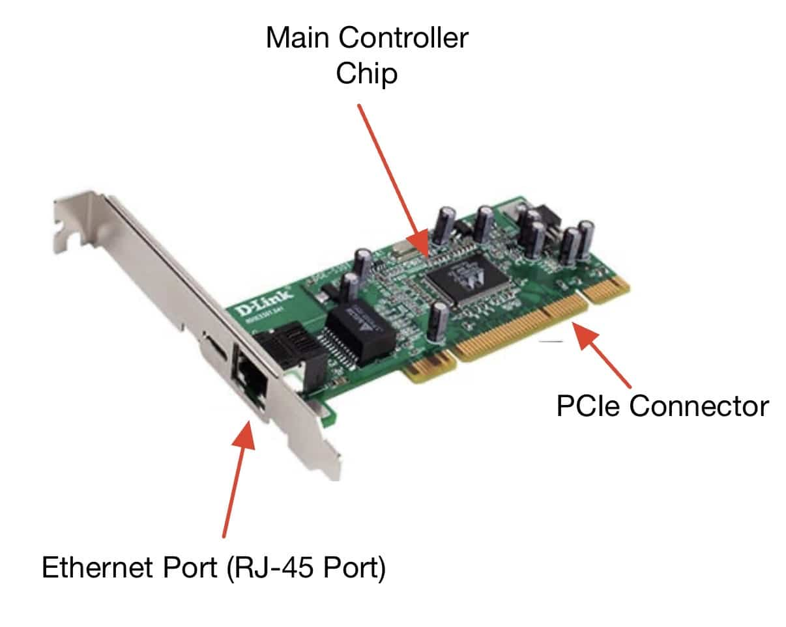

The MAC address on NIC 2 is exactly: 04:92:26:8A:BD:4C
On a local network, a MAC address uniquely identifies each device, allowing data to be routed to the correct location.
The Ethernet port is used to plug in a network cable, which allows for a physical connection to be made to the NIC (Layer 1 OSI).
The PCIe connector allows for the NIC to connect to the computer's motherboard, powering it and allowing it to interact with the computer.
The NIC needs a main chip in order to process data and perform its intended function, sending and receiving frames.
The MAC address belongs to the NIC because MAC addresses are assigned at production, and they are unique to each device.
A MAC address is considered a physical address because it is usually hard-coded into a NIC at production. This address is not assigned by the network, but rather part of the NIC itself. Seeing a real NIC helps to understand this because its MAC address is actually printed on the NIC, meaning that the MAC address is paired to the NIC's hardware.
Understanding Logical Addressing
IPv4 is no longer sufficient because the amount of devices in the world is increasing heavily. Since IPv4 can hold up to approximately 4.3 billion IP addresses, which will not be enough in the near future, an addressing system with more bits is necessary. IPv6 solves the address shortage because, rather than each address having 32 bits like IPv4, each address instead has 128 bits, which heavily increases the amount of available IP addresses to assign. IPv6 also includes various benefits, such as enhanced built-in security features and increased efficiency in routing. Furthermore, IPv6 addresses are also more compatible with different types of devices. Modern networks must support both IPv4 and IPv6 during the transition because many devices still reference IPv4 addresses when transmitting data, but the benefits of IPv6 can also be obtained by these devices.
Technical Development
Understanding Physical Addressing (MAC Addresses)
Here are the labeled components of a NIC, as well as where a MAC address would be located on the NIC:
Applying Knowledge
To get the IP address of the Mac Mini being used, ifconfig was used:
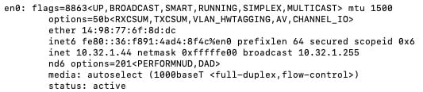
Full MAC Address: 14:98:77:6F:8D:DC
OUI: 14:98:77
This OUI was searched up on this website:
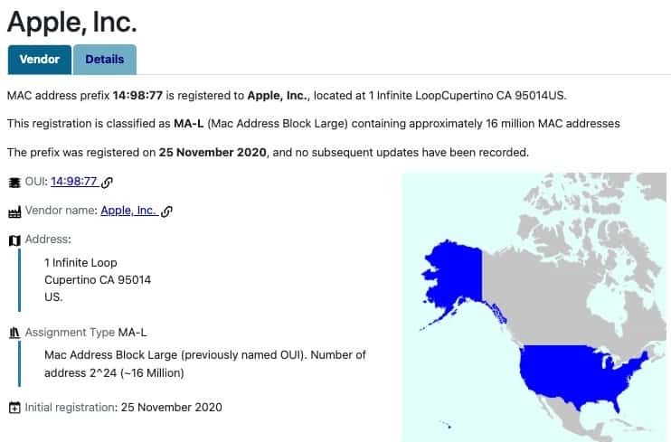
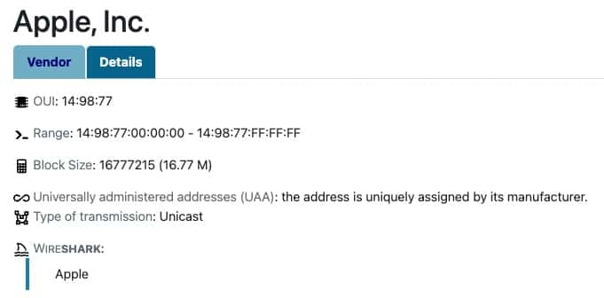
Vendor: Apple, Inc.
This appears to be physical hardware. This MAC address is also specified to have Unicast transmission and to have been intialized on November 25th, 2020.
Comparison
On the physical NIC images, the MAC address came directly from the manufacturer, listed on a sticker attached to the NIC. On the VM, the MAC address came from a virtual NIC, which simulates the function of a real NIC. Between physical and virtual MAC addresses, both store 48 bits of data and are in the form of hex digits. However, they differ in that the virtual MAC address does not have any listed manufacturer information, and it can be changed. A virtual NIC still requires a MAC address because that MAC address can uniquely identify the virtual machine on its virtual subnet.
Using maclookup.app, the information for various MAC addresses was found:
| Full MAC Address | OUI | Vendor/Company Name | Type of Vendor | Notes | | ---- | ---- | ---- | ---- | | F0:18:98:AA:BB:CC | Apple, Inc. | Physical | Likely identifies a Mac computer | | 3C:5A:B4:11:22:33 | Google, Inc. | Physical | Likely identifies a Google device (Android) | | 60:45:BD:12:34:56 | Microsoft | Physical | Likely identifies a Microsoft computer | | A4:BA:DB:22:33:44 | Dell Inc. | Physical | Likely identifies a Dell computer | | 04:1A:04:55:66:77 | WaveIP | Physical | Possibly identifies a radio or wireless device | | 00:50:56:AA:BB:CC | VMWare Inc. | Virtual | Likely identifies a VMware virtual machine | | 52:54:00:12:34:56 | N/A | Virtual | Could identify a virtual NIC assigned to a VM |
Most of the physical vendors were under large tech companies (Apple, Google, etc.), suggesting that the devices identified by those respective MAC addresses are commonly used personal devices. Many virtual NICs may also not have an associated vendor. Virtualization vendors also need registered OUIs because virtual NICs must still be identified by their respective network (depending on whether it is in Bridged or Shared mode). This activity contributed to a better understanding of MAC addressing at Layer 2 because it showed that Layer 2's transmission of data uniquely identifies each device based on its vendor and physically encoded information.
Understanding Logical Addressing
ip addr show was used to obtain both the IPv4 and IPv6 address of the Ubuntu VM. Note that the IPv4 address is in decimal, and the IPv6 address is in hexadecimal:
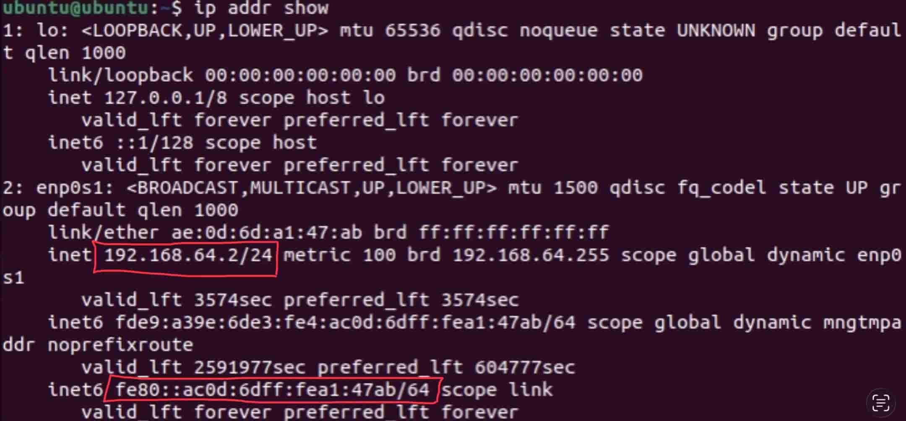
IPv4 vs. IPv6 Comparison Table:
| Feature | IPv4 | IPv6 | | Address Length | 32 bits | 128 bits | | Notation | Dotted Decimal | Hexadecimal w/ Colons | | Approximate Capacity | 4.3 Billion Addresses | Essentially Unlimited (for the next few decades) | | Example | 192.168.64.2 | fe80::ac0d:6dff:fea1:47ab | | Where it is used | The majority of the internet and older devices | Mobile devices and recently created devices |
Logical/IP addresses are necessary in addition to physical MAC addresses because MAC addresses are only useful for local communication, as the physical identification of a device is necessary when communicating in a local network. However, physical addresses do not work for global communication since it requires the general location of a device. As such, an IP address is able to identify the broad location of a device, allowing communication on the internet as a whole. IP addresses allow communication beyond the local network because each router has a designated external IP address. Since the global internet cannot identify an individual device with respect to its physical MAC addresses, IP addresses assigned to routers provide general locations where data must be moved and facilitate data transfer. For example, when playing an online video game, data must be transferred between two different general locations using IP addressing: the local network of the player and the server in which the game is being hosted.
Dynamic vs Static Addressing and When to Use Each
This activity will examine whether each virtual machine (Ubuntu and general Linux) uses DHCP.
When using ip addr show on the Ubuntu VM, these addresses were obtained:
IPv4: 192.168.64.2/24 IPv6: fe80::ac0d:6dff:fea1:47ab/64
These are the results from the Linux VM:
IPv4: 192.168.64.3/24 IPv6: fe80::c47e::63ff::fe56::1b5e/64
Next, each of the VM's config files were analyzed.
On the Ubuntu VM, here is the config file:
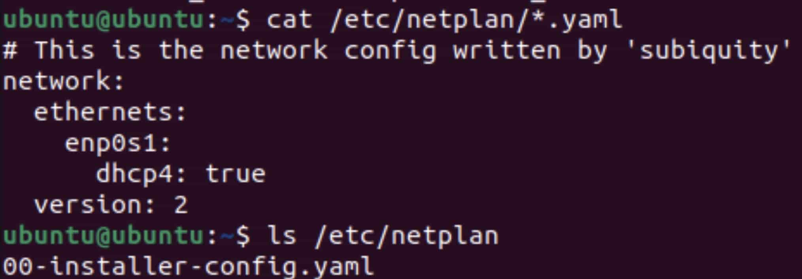
As shown above, the exact filename of the config file is 00-installer-config.yaml.
The line dhcp4: true is also contained, thus implying that the Ubuntu VM uses DHCP, so an IP address is assigned automatically.
Next, on the Linux VM, here is the config file:

Here is the output of nmcli device show:
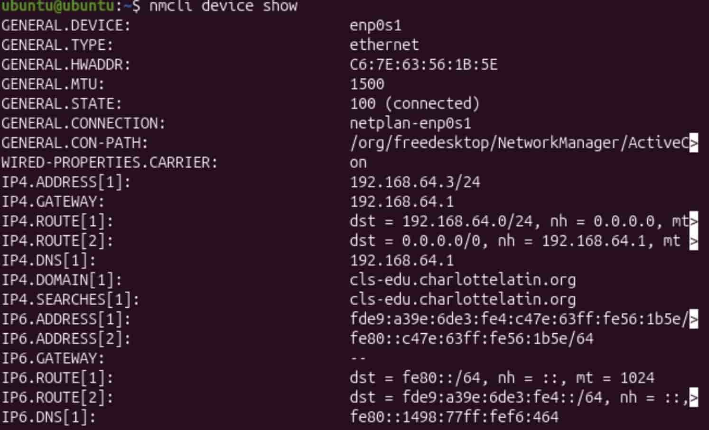
The Netplan yaml file does exist, and NetworkManager manages the virtual machine. Thus, both Netplan and NetworkManager are used. Moreover, when using nmcli device show, it is shown that Netplan and NetworkManager are both used, confirming the results.
As shown above, both the lines dhcp4: true and dhcp6: true are listed. Thus, DHCP is enabled, so the IP address of the Linux VM is assigned dynamically. The use of NetworkManager shown before in nmcli also supports this.
Real-World Analysis
This activity determines whether a real-world scenario should use static or dynamic addressing and why.
| Device | Static or Dynamic | Justification | | School web server | Static | A school web server must be reliable since it is accessed by many devices and often hosts its own websites. Thus, since this is a critical system, static addressing would be best. | | Classroom Printer | Static | A printer is a critical piece of hardware and is generally a permanent installment. A consistent address is best, so static addressing makes sense. | | Student Laptops | Dynamic | Student laptops are only used by students for a certain amount of years, so they do not need the same IP addresses for a long time. Moreover, since they are widely distributed, dynamic addressing is much easier to implement. | | Security Cameras | Static | Security cameras must always be functional, and it would be problematic if its IP address expires. They are also generally a permanent installment | | Teacher Workstation | Dynamic | A teacher's workstation may have to change devices and is often temporary. There are also a large amount of teachers in a school, so dynamic addressing would allow for easier management. |
Configuring and Verifying IP Addresses on a Linux VM
This assignment explored how the Netplan utility works. It is important to note these things about Netplan:
- Use spaces only
- Indentation matters, and it must be kept consistent
- List items should be properly aligned
- The YAML structure must match Netplan's format
First, the active interface of the SECOND Linux VM was identified via ip link show to be enp0s1.
Next, the respective YAML file was found via ls /etc/netplan and opened via sudo nano /etc/netplan/50-cloud-init.yaml:
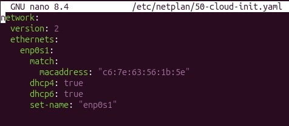
This was changed to have static rather than dynamic addressing:
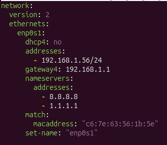
To apply the Netplan, sudo netplan apply was run:
This change was confirmed with ip addr show:
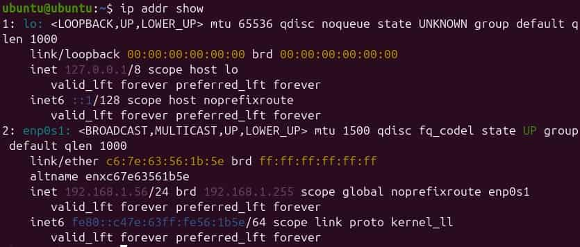
As seen above, the static IP address assigned in the changed YAML file (192.168.1.56/24) was shown by the interface.
Next, ip route show was run:

The default gateway (gateway4) is shown to be 192.168.1.1, which was assigned in the YAML file. The active network interface was also confirmed to be enp0s1.
Finally, to confirm successful connection to the network, Google (8.8.8.8) was pinged, but ping failed here because the virtual machine was in bridged mode. To access a working gateway, the broadcast address was changed to the actual router's address, 192.168.64.1.
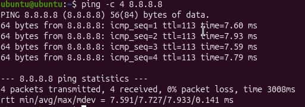
100% of the packets were received, so the connection was confirmed to be successful.
Testing and Evaluation
Understanding Physical Addressing (MAC Addresses)
Connecting the Physical and Digital: Interpreting MAC Address Structure
OUI: 14:98:77 Device Identifier: 6F:8D:DC
The OUI represents the manufacturer of the NIC. The OUI connects the NIC to the manufacturer because each manufacturer is assigned a certain OUI. Manufacturers must use unique OUIs because otherwise, the identification of two devices made by different companies could appear to be the same, thus risking data being transferred to the incorrect device.
A NIC needs its own unique second half because the second half allows for the device to be uniquely identified. Thus, this allows two devices of the same manufacturer to be uniquely identified on the same LAN because the router is able to assign different internal IP addresses to the respective devices (via the device identifier). This uniqueness is especially important for frame delivery because once in a LAN, frames require a physical address so that data can be routed to the correct place. Thus, if there is a conflict in MAC addresses, frames may be routed to different places accidentally or to an unintended device.
Using the labeled NIC images, it was discovered that physical NICs store the MAC address internally in their hardware, with the MAC address usually being listed on a sticker on the NIC. Virtual machines generate MAC addresses, usually temporary ones, by taking from available addresses for that respective vendor. This allows data to be routed to the VMs in their network (either shared/virtual or bridged). Physical MACs and virtual MACs both contain 6 pairs of hex digits, with the first three identifying the manufacturer and the other three identifying the specific device. However, some virtual MACs do not have an associated vendor and company information or simply have a generic vendor. Layer 2 functions the same way regardless of physical or virtual hardware because VMs are intended to act as their own devices. Thus, to send and receive data from the VM, a MAC address must still be assigned such that frames are routed to the correct place.
Ultimately, MAC addresses are involved in Layer 2 (Data Link) of the OSI Model. MAC addresses never leave the local network because for the data to exit the router or enter into the router, the external IP address of the device is used, thus moving onto Layer 3 of the OSI Model. The use of IP addresses allows for broader communication between different networks. When frames move to a different network, the respective source and receiver MAC addresses change because data must be routed between different devices.
Every NIC, whether physical or virtual, must have a globally unique MAC address to ensure that their frames are always transmitted to the correct location on a LAN, as a MAC address specifies a certain physical location.
Understanding Logical Addressing
This website was used to obtain information regarding IPv6.
An IPv6 link-local address is an IPv6 address which is only used for communication on a local network. Specifically, these addresses only apply to physical connections. IPv6 link-local addresses always start with 'fe80::' since the prefix 'fe80::' is specifically reserved for local addressing, ensuring that these addresses are not confused for other IP addresses. Link-local addresses only support local communication, and they do not require a DHCP server or external configuration because they are only assigned relative to a local network, and they are not accessible outside of the local network. Every IPv6-enabled device automatically generates a link-local address to allow for communication solely on the local network. Link-local addresses ultimately facilitate communication between devices connected to the same router or in the same network.
Dynamic vs Static Addressing and When to Use Each
Comparison
The Ubuntu VM uses the Netplan configuration tool, while the second Linux VM uses both Netplan and NetworkManager. The Ubuntu VM is only using DHCP for IPv4, but the Linux VM is using DHCP for both IPv4 and IPv6. The configuration syntaxes are very similar for both VMs (colons and name fields), but the second Linux VM config file has much more information listed. Two different Linux systems may configure networking differently based on their needs, because a VM that manages something that must be reliable (i.e. a piece of hardware) should preferably have a static address, rather than a casual -se VM which would usually use a dynamic IP address.
Static vs. Dynamic Addressing
Dynamic addressing is when an IP address is assigned automatically to a device using DHCP. The DHCP protocol specifically the DORA method to find a server to assign an IP address and request one. Static addressing is when an IP address is manually assigned to a device by an administrator, and it is usually used for permanent fixtures or very important devices. Networks need both static and dynamic addressing because important devices should usually have static addresses, and if the network manages a large amount of smaller devices, they should use dynamic addressing for efficiency. In general, dynamic addressing should be used in large networks for less important devices (clients or individual people). On the other hand, static addresses should be used for permanently installed devices and important devices for management and administration.
Configuring and Verifying IP Addresses on a Linux VM
ip addr show determined that the static IP address assigned in the changed YAML file (192.168.1.56/24) was successfully implemented.
ip route show displayed how the default gateway (gateway4) was shown to be 192.168.1.1, which was assigned in the YAML file. The active network interface was also confirmed to be enp0s1.
When initially checking successful connection to the network using ping, it failed because the virtual machine was in bridged mode. To access a working gateway, the broadcast address was changed to the actual router's address, 192.168.64.1.
100% of the packets were received, so the connection was confirmed to be successful.
Differences Between Addressing Methods
Physical addressing (MAC) purely works on a local level within a network. A MAC address uniquely identifies each individual device such that when data is sent through the router to that device, the correct physical location is reached. Meanwhile, logical addressing (IP) works on a wider, usually global, level to define a general network relative to other networks. This allows for the correct global location of a device to be found when transmitting data over different networks. While logical addressing identifies networks, IP addresses can also refer to local devices, either dynamically or statically. Dynamic addressing is when the network automatically assigns an IP address to a device, usually for large networks. On the other hand, static addressing is when the administrator specifically assigns an IP address to a certain device, which is not changed regardless of network.
Reflection
In this activity, the most challenging part of IP configuration was trying to get the broadcast address to work. While the other steps worked correctly, this step happened to fail because the virtual machine was in bridged mode, requiring the broadcast address of the network's router to be found and inserted. This activity especially highlighted that YAML files are extremely sensitive, as tabs are not allowed, and a single space can completely invalidate a YAML file.
Reflection
Through the Physical Addressing and Logical Addressing activity, students learned in detail how devices are addressed on multiple levels of the OSI layers. The first part delved into MAC addresses and how they are able to identify a device locally, making up Layer 2 of the OSI model. MAC addresses were found to be unique to every device and contain manufacturer information, which is especially helpful when setting up a SOHO or another local network. MAC addressing is very important to know in real life because it is critical in identifying physical locations on any network. The other parts of this activity detailed layer 3 of the OSI model, specifically the role of IP addresses in identifying devices. While local IP addresses could be dynamically (DHCP) or statically assigned by a router, global IP addresses are generally static and simply identify the network of a device rather than the device itself. Two virtual machines (Ubuntu and another Linux VM) were also compared to see their config files and modified for static addressing, which displayed that different devices can be configured to have different configurations depending on the administrator's desire. Being able to change whether a device is dynamically or statically addressed is especially important in the real world since permanent or important devices should be assigned static addresses to prevent any disconnection and ensure reliability. IP addressing as a whole can also help a user debug if packets are not being successfully transmitted between devices, which can occur in everyday devices like laptops and iPads. A reasonable next step would be to examine the transport layer of the OSI model. Citations for this assignment include maclookup.app, Cisco, and the assignments provided by the Charlotte Latin School AP Networking Fundamentals class.